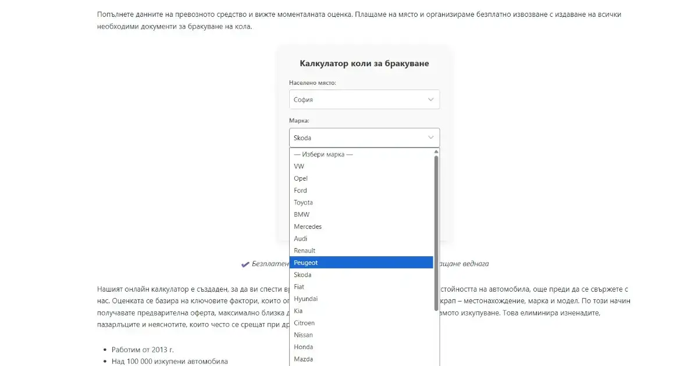
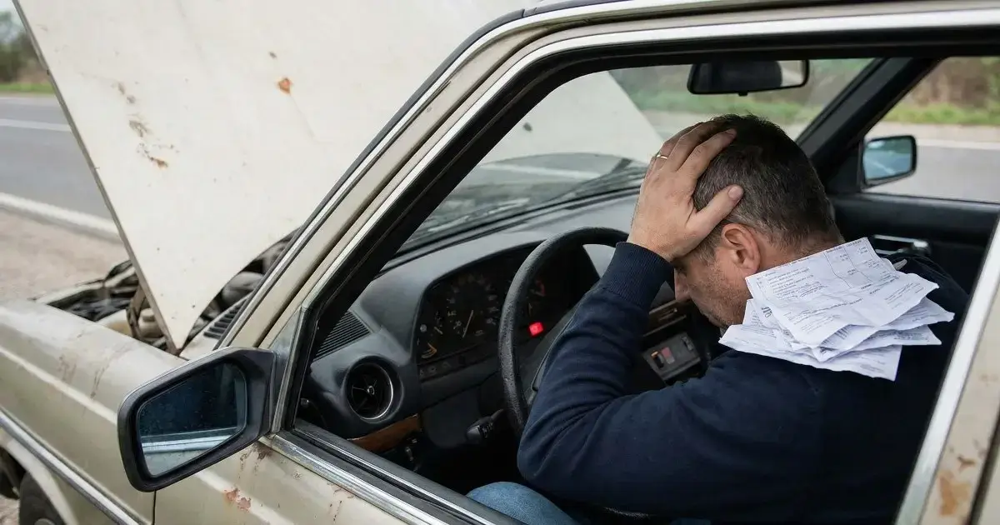
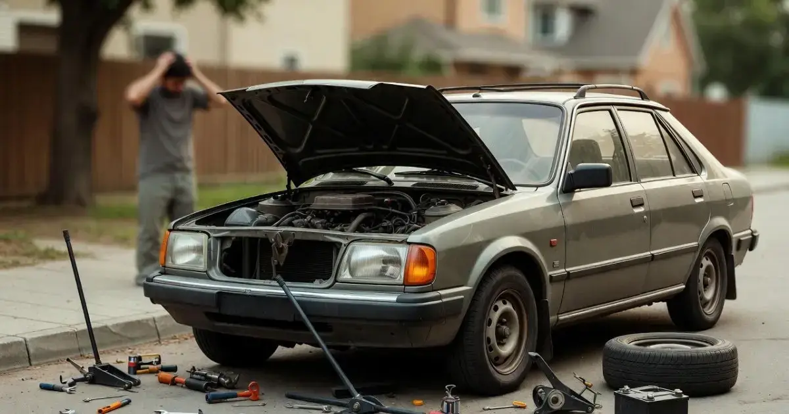
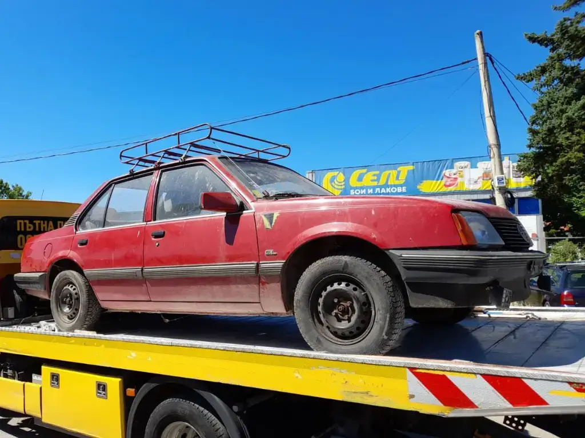
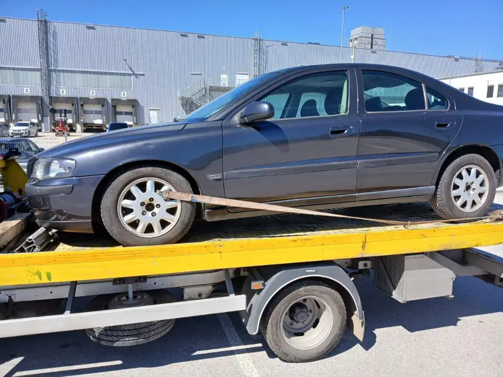

Блогът за изкупуване на коли
Тук ще намерите ценна информация за изкупуването на коли за скрап, включително:
Как да се отървете от старата си кола. Колко пари можете да получите за автомобил за скрап. Какви фактори влияят на цената на превозно средство като метален отпадък. Как да изберете компания за изкупуване на коли за скрап. Какво се случва с колата ви след като я продадете за рециклиране. Въобще, всичко свързано с бракуването на автомобил. Ние сме тук, за да ви помогнем да вземете най-доброто решение за вашата стара кола. Потърсете ни чрез страница за контакти.

Как се ползва коли за скрап калкулатор
Въведете марка, модел и местоположение и веднага получете оферта за изкупуване на вашия автомобил. Записването е всеки ден от 8 до 20 часа.
Прочети още
Бракуване на МПС с безплатен транспорт
Предлагаме безплатен транспорт на вашето МПС до нашия пункт за рециклиране на бракуваните коли.
Прочети още
Изкупуване на коли за скрап София
Бракуване на коли в София ✓ Безплатно извозване ✓ Документи за КАТ ✓ Всеки ден от 8 до 20ч ✓ Обади се: 0885 70 16 60
Прочети още
С какви документи се бракува кола
Ние се грижим за пълната документация, необходима за справяне с бюрокрацията по бракуването на автомобила и за прекратяване на регистрацията.
Прочети още
Как се оценява кола за скрап
Освен най-добрата цена, предлагаме и безплатен транспорт на превозните средства за скрап от адрес на клиента до най-близкия ни пункт за изкупуване на коли.
Прочети още